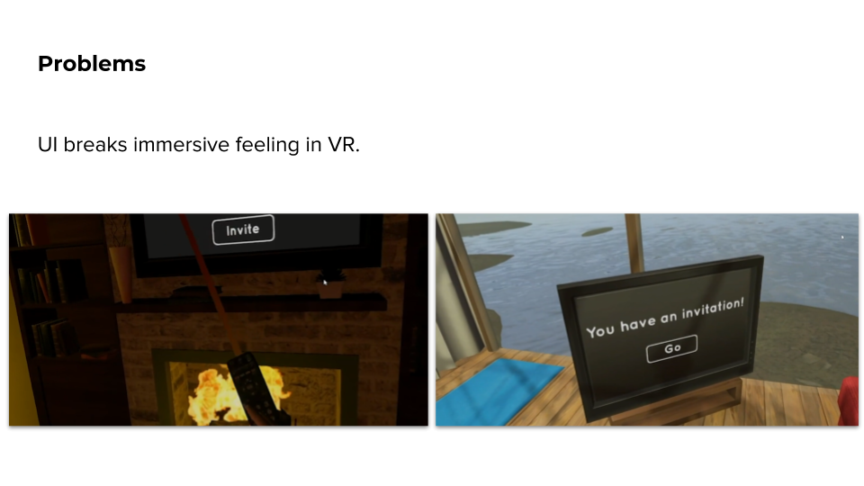
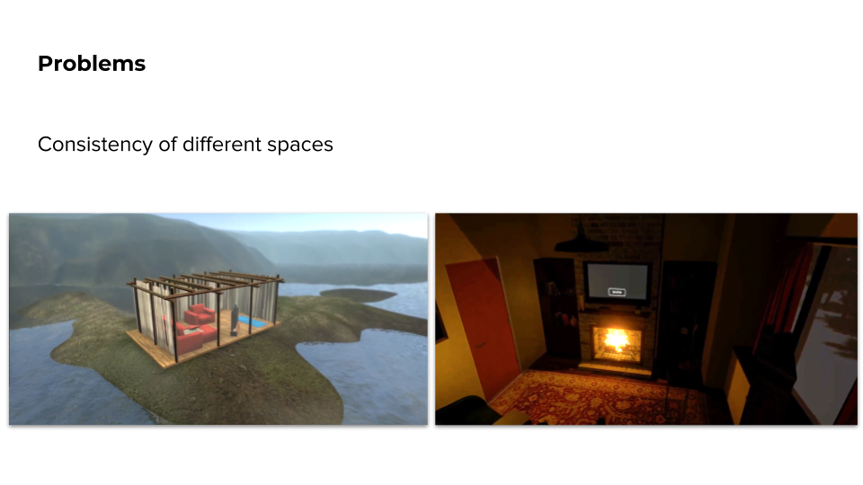
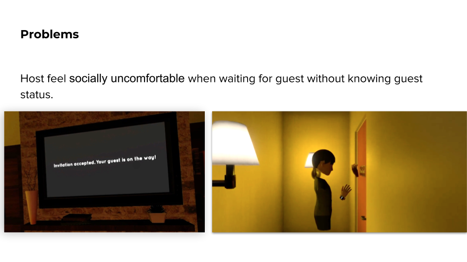
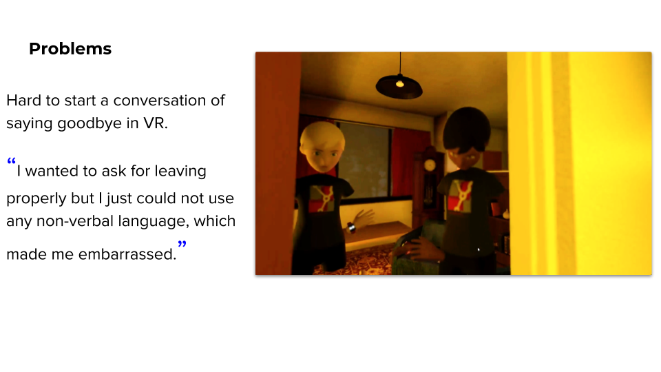
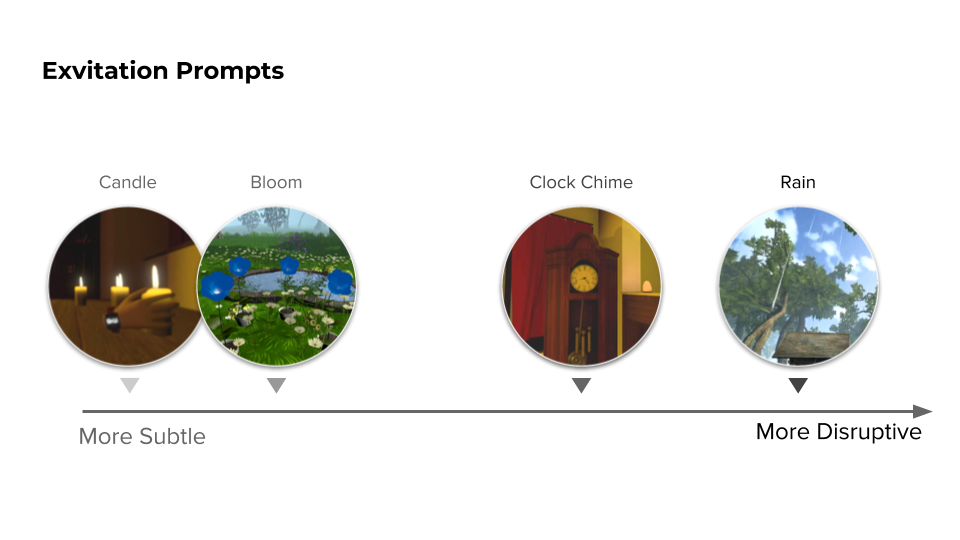
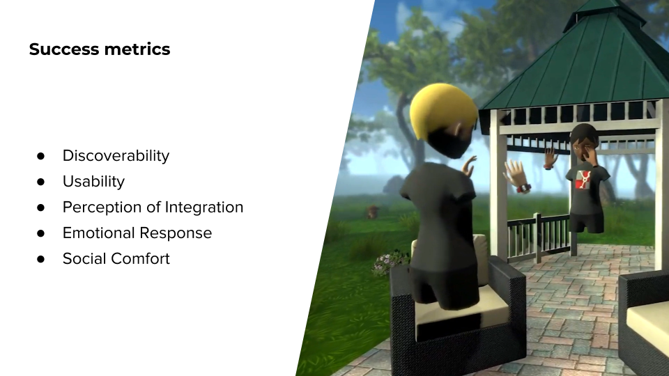
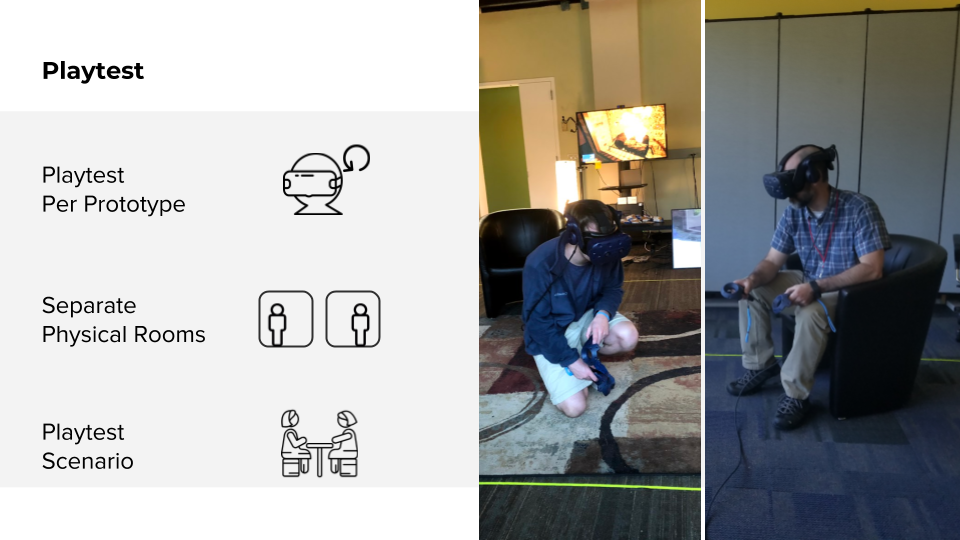

Abode: VR Home
Engine: Unity Platform: 2 Networked VIVE Pro devices Language: C#
This project this semester is focused on the design question of different methods to facilitate invitation & entry, and exvitation & exit – how to make these experiences feel comfortable and authentic in VR.
According to our client Verizon, In 5 to 10 years, social VR will become more and more popular. Users will have their personal space like a VR home in VR community. In this case, users could customize their VR home and put their personal belonging into it. In real life, we have doors, locks and gates to protect our privacy, however in VR world, privacy has not been well protected yet. Imagine I can freely walk into your VR home and steal everything from your personal space. But when I come back, I find my belongings are all taken by other. It would be funny and also for users, when something they don’t want to share are seen by others, they would feel invaded.
Problems Solving
In our first prototype, we use an free-floating ui for users to operate in their VR home, from interview and survey, I find that user complain that the appearance of this floating UI break their immersive feeling, because the environment is a very cozy and comfortable room with a hearth, but the UI floating in the air feels so sci-fi, which don’t match the surrounding at all. In order to deal with this problem, I try different ways to integrate the invitation ui into the surrounding seamlessly and naturally and find out use a diegetic ui on TV screen could be a good solution. Firstly, TV is natural in a home-like environment. Secondly, when user hold the remote controller in hand, it would remind them of real life experience of using remote to interact with TV and it is very intuitive for them to do so. Thirdly, they can sit on the sofa and operate the UI with remote instead of standing up and clicking through, which reduce the energy cost.
Through our playtest, I find that for more fantastical entry/exit systems, spaces could be more inconsistent without bothering users. For example, from our survey, for users who wave magic wand and see the materialization effects on their body, their rate of the consistency of two VR environments is 37% higher than users who use more realistic way to transit. So, when user need to use more realistic way like walking through a hallway, I need to ensure the consistency of lighting and art style of these two VR homes, otherwise users lose their immersive feeling.
It's important that system feedback reinforce social constructs. In previous prototype, after host send invitation to guest, he waited for guest to show up for 2 minutes without being told any information of guest status. In the interview, he said “I was not sure where is my guest and when he would show up, which made me feel socially uncomfortable. I hoped I can know if he accepted the invitation or not.” Indicators like ETA, particle effects on the wand/portal, sound effects on the door/elevator, and other feedback, are important so users can correctly gauge where in the experience they are without feeling socially uncomfortable.
In VR world, we can not show detailed facial expression and non-verbal language, and the outside environment will not change according to time passing by, like the sunset or sky turn into dark.
Based on psychological research, in communication 55% information is got from non-verbal language. However, VR is not good at showing these non verbal language. Through our playtest, we find that If the relationship between host and guest is not close enough, the exiting process can be awkward and in interview they want something that can help ease this process.
In order to deal with this problems, I have designed several Exvitation Prompts to inform host and guest that time is up and they could use the prompts as an excuse to leave.
When I design Exvitation prompts, I also follow certain design metrics like high discoverability and it need to be very intuitive for user to understand. They are independent from other prototypes because they are more related to the surrounding. The candles dying out is an exvitation prompt that is less noticeable and provided a soft ending to conversation, while rain was easily noticeable and people tended to end the experience soon after it started raining. Clock chiming is medium in terms of disruptiveness, the sound effect will make users notice but not immediately stop their conversation. I design and write codes to prototype all these prompts, in my future plan, I want to provide user more diverse choice according to their environment and how disruptive they want the prompts to be.
These prototypes were developed using our five design metrics. We record all the user’s dialogue and behaviors in video and use observation, questionnaire and interview to validate our design.
We conducted a playtest with every iteration, while adjusting variables such as environment, entry & exit methods and exvite prompts.
Responsibility
I am responsible for designing user joureney, designing interactions, drawing storyboards, and prototyping.